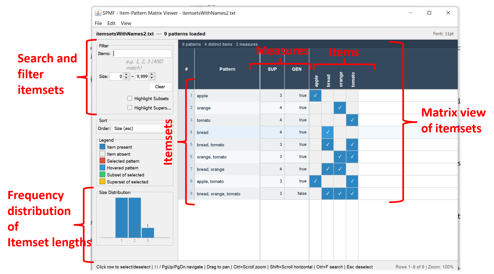
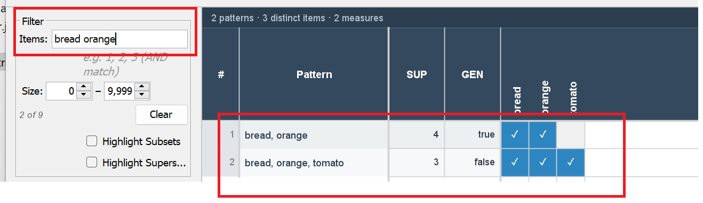
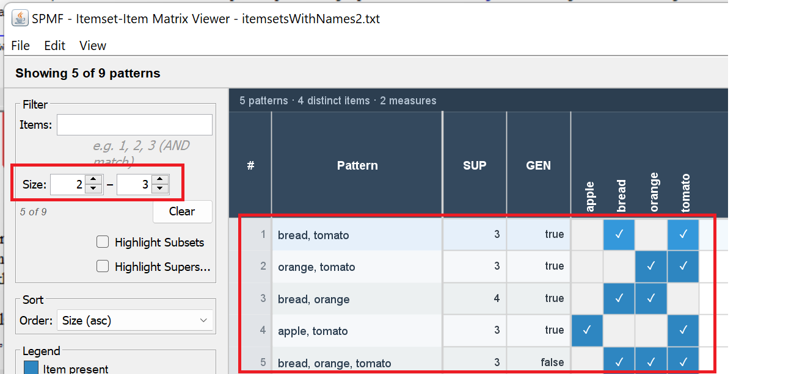
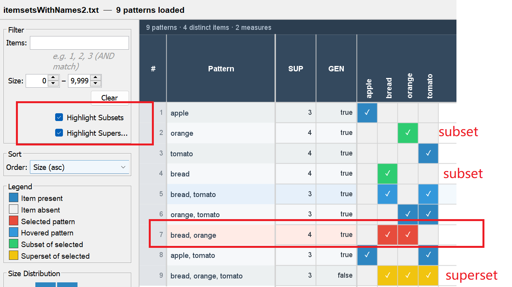
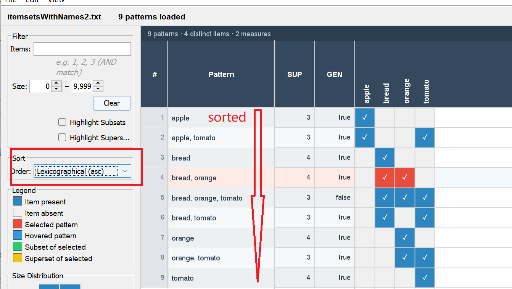
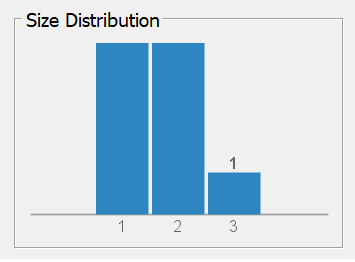

View Itemsets using the Itemsets-Item Matrix Viewer (SPMF documentation)
This page explain how to use the tool called the Itemsets-Item Matrix Viewer to visualize a set of itemsets produced by an itemset mining algorithm.
How to run this example?
If you want to run this example using the graphical user interface of SPMF, follow these steps.
1) First, select an itemset mining algorithm offered in SPMF such as Apriori and FP-Growth. Several algorithms are offered and are described in the documentation of SPMF.
2) Then, in the user interface of SPMF, after selecting an algorithm and setting its input file path, output file path, and parameters, click on the combo-box besides "Open output file using:", and select "Visualize_With_ItemItemset_Matrix" so that the discovered patterns will be opened with the Itemset-Item Matrix Viewer.
3) Then click on "Run algorithm" to run the algorithm. After the algorithm terminates, the discovered patterns will be displayed using the Itemset-Item Matrix Viewer:
The interface of the Itemset-Item Matrix Viewer is like this:

On the right, there is a matrix view where the rows are itemsets, and the columns indicate measures for describing the itemsets and which items are contained in those itemsets. For example, the last line of the matrix in this example is for the itemset {bread, orange, tomato},. where the second column indicates that this itemset has a value of 2 for a measure called SUP and a value of false for another measure called GEN. Then, the four last columns visually indicate that the items bread, orange and tomato are part of this itemset. This matrix view is useful for visualizing results as it allows to quickly see similarities and differences between itemsets.
On the left side of the window, there is also a small panel providing options for serarching and filtering itemsets. By using the field "Items" below, we can type a list of items separated by space and only the itemsets containing these items will be displayed. For instance, if we type the items "bread orange" in the field "items", only the itemsets {bread orange} and {bread orange tomato} are displayed.:

The interface also allows to filter itemsets by size. For example, to visualize only itemsets having a size ranging from 2 to 3, we enter the value 2 and 3 below:

Another useful feature of the Matrix Viewer is to display the subsets and supersets of the selected itemset. For example, we can click on Row 3 of the matrix representing the itemset {bread orange} and then click on the checkboxes "Highlight subsets" and "Highlight supersets" to obtain this vie where the subsets and supersets of this itemset are highlighted:

There is also a SORT option that is provided in the interface for sorting itemsets according to different orders such as by ascending on descending size, lexicographical order, or by the measures used to describe the itemsets. For example, in the picture below, the sorting order is set to be the ascending lexicographical order, which means the alphabetical order.

Lastly, another feature is to display the size distribution of the currently displayed itemsets:

For instance, this histogram indicates that there are more itemsets of size 1 and 2 than size 3, and that there is only one itemset of size 3 in the results.
Other ways of running the Itemset-Item Matrix Viewer
It is also possible to run the Itemset-Item Matrix Viewerr as an algorithm from the GUI of SPMF..
In this case, in the user interface of SPMF, select "Visualize_With_ItemItemset_Matrix" as algorithm. Then, select a file containing itemsets as input file. Then, click "run algorithm".
This will display the patterns from the file using the Itemset-Item Matrix Viewer
Besides, it is also possible to call the Visual Pattern Viewer from the command line interface of SPMF using the following syntax. To open a file called: patternsFrequentItemsets.txt, the command is:
java -jar spmf.jar run Visualize_With_ItemItemset_Matrix patternsFrequentItemsets.txt in a folder containing spmf.jar and the input file.
What is the input file format?
The algorithm takes as input a file containing itemsets in SPMF format. This format can vary slightly depending on the algorithms that are used to generate the itemsets. Hence, you may look at the documentation of the algorithms that you are interested in using for more details about the output format. In the above example, this file was viewed with the Itemset-Item matrix viewer:
@FILETYPE="Frequent itemsets"
@SOURCE="SPMF SOFTWARE https://philippe-fournier-viger.com/spmf/"
apple #SUP: 3 #GEN: true
orange #SUP: 4 #GEN: true
tomato #SUP: 4 #GEN: true
bread #SUP: 4 #GEN: true
tomato bread #SUP: 3 #GEN: true
orange tomato #SUP: 3 #GEN: true
orange bread #SUP: 4 #GEN: true
apple tomato #SUP: 3 #GEN: true
orange tomato bread #SUP: 3 #GEN: false